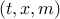
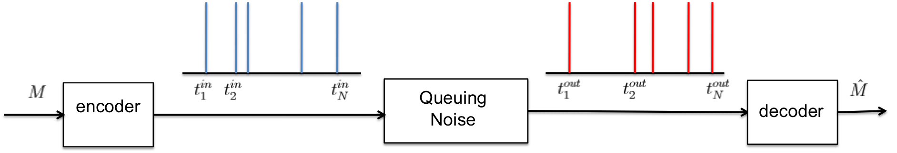
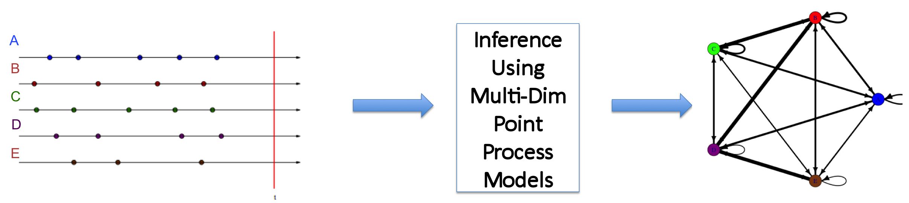
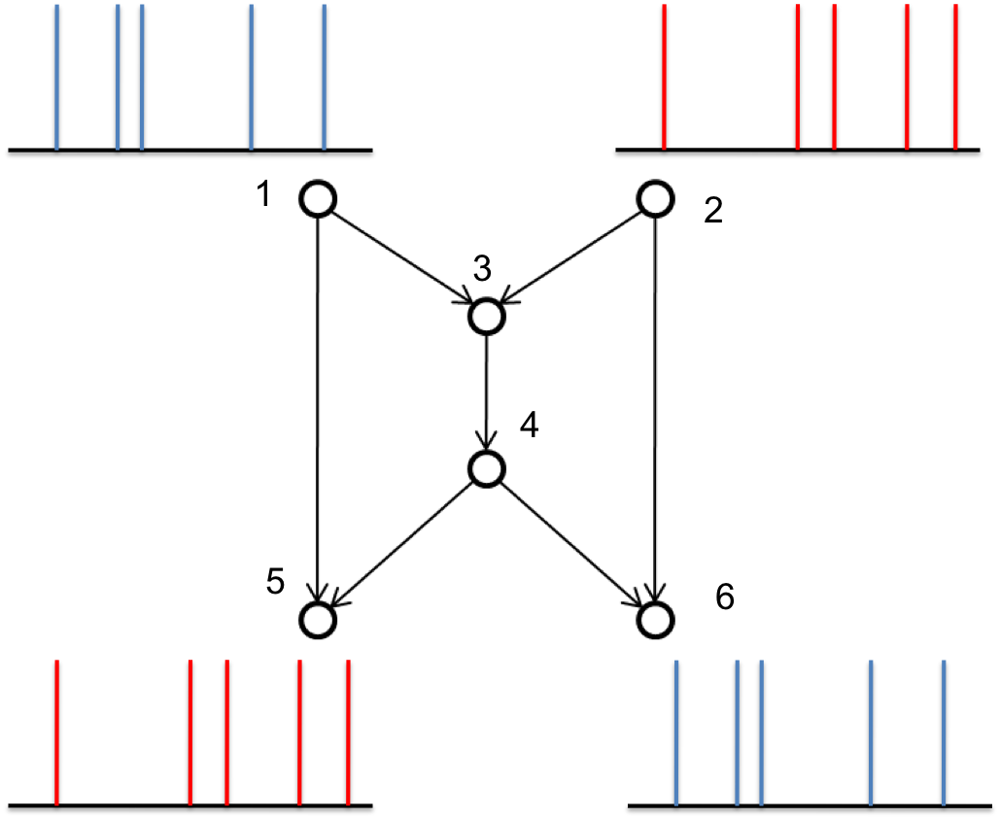

S.P.I.K.E.S :- Point Process modelsDefine a spike train as a sequence of time-ordered events. These events can be
Each event (spike) is determined by the tuple  which correspond to the time, magnitude and type of the event occured. I looked at the following problems that involved SPIKES :). Communication using SPIKES under queueing noise. A message needs to be communciated over a noisy channel using a spikeTrain. But the timings in the events can get jittered by the queuing noise. The interarrival timings before entering the queue are not the same as interdeparture timings from the queue. The problem is to design an encoder and decoder to reliably communicate the message over this queuing noise? What is the maximum rate of communication? In my Masters thesis, I looked at the broadcast version of this problem where there is a single encoder and two decoders - one with less noise than the other. The problem is to find the achievable rate region in this broadcast sceneario. Modelling Multi Dimensional Point Processes Consider multiple neurons interacting with each other and we observe the time-series of the action potentials(spikes) emitted by these neurons. The objective is to determine how these neurons are influening each other. One way to determine this is to
There are many issues like which generative model to use depending on our ultimate goals, different estimation techniques, and handling sparse events data, I will write about them here as time permits. Network Coding for Timing Channels WORK UNDER PROGRESS. The figure sums it all. Node 1 has a message coded in ‘‘blue’’ spikeTrain. Node 2 has another message coded in ‘‘red’’ spikeTrain. Nodes 5 and 6 should untimately decode both messages and . Assuming all the edges are noiseless, the objective is to perform coding at the nodes 3 and 4 to minimize the effective rate. |